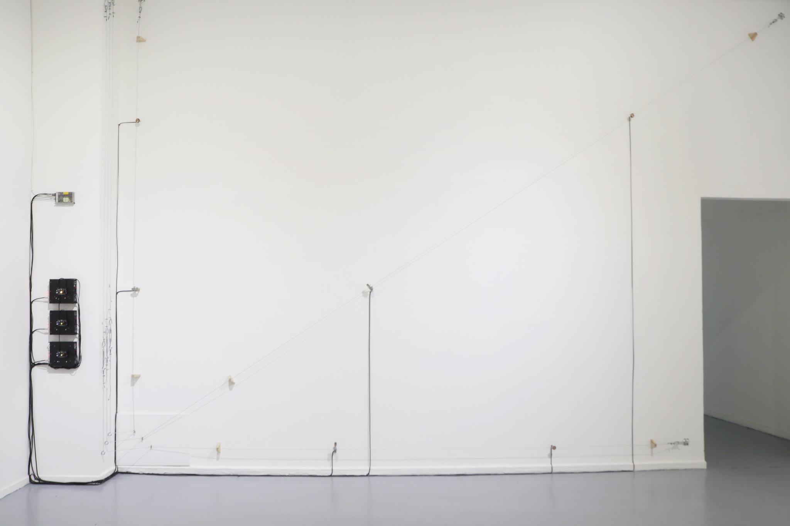
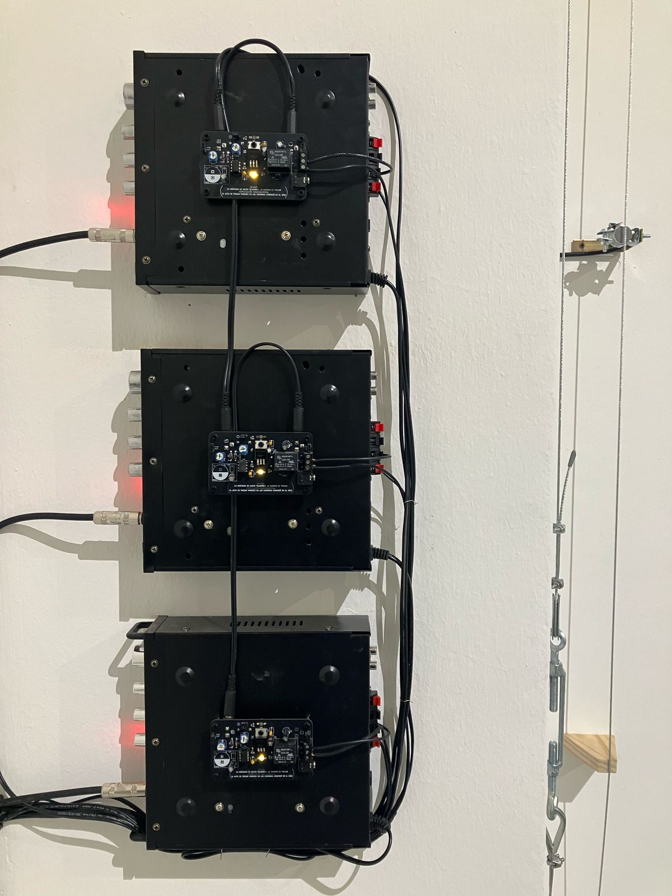
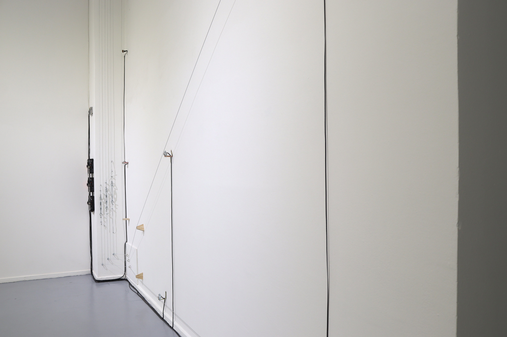
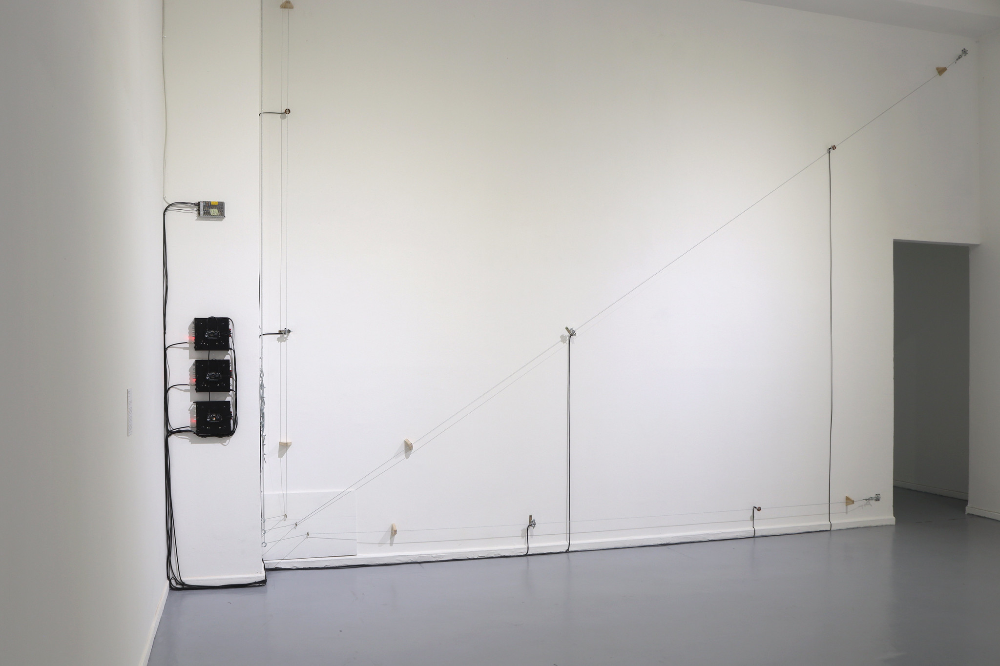
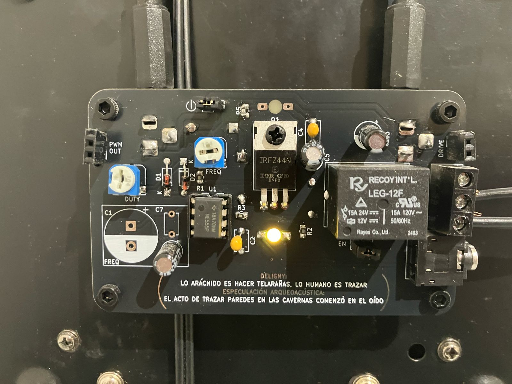
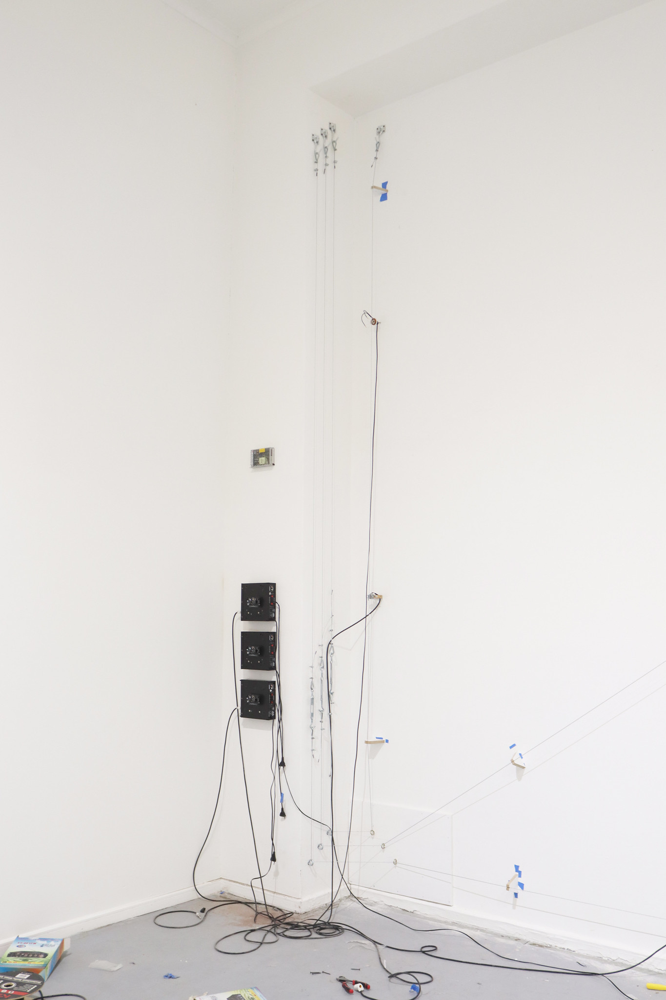
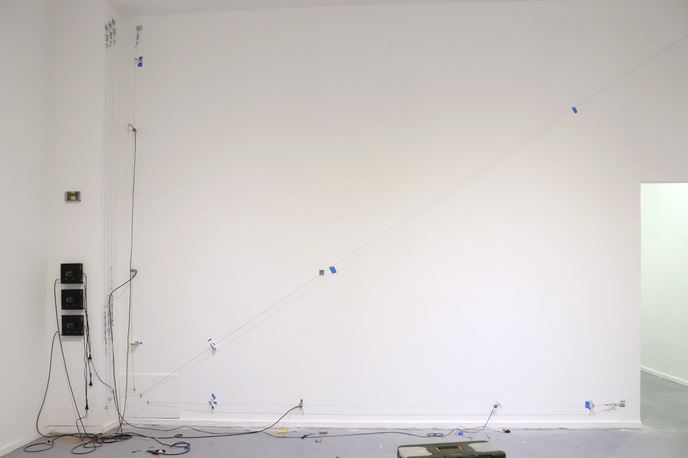

Sound installation. 3 steel cables, 3 high-impedance coils, 3 low-impedance coils, 6 neodymium magnets, tensioners, 3 audio amplifiers, 3 electronic boards with astable circuit. 700 x 350 x 50 cm
Part of the exhibition "Tiempo de decaimiento temprano" by Núcleo de Artes Sonoras at MAC Quinta Normal (Santiago, Chile. 2025)

Photo: Clo Rojo
Thanks to Angel Olivares, Vicente Espinoza and Ignacia Valdebenito for their support during installation


Un trazo en el oído speculates on the possible link between two anthropological hypotheses. The first, coming from archaeoacoustics, suggests that the specific site within a cave where a prehistoric subject chose to create rock art was selected due to the presence of strange sonic phenomena, generated by the acoustic properties of the place.
On the other hand, the writer Fernand Deligny develops a metaphor around "the arachnean", suggesting that spiders weave intricate webs without needing to be taught how. From this, he asks what "the human" might be, and proposes that its distinctive gesture is that of "tracing": moving the hands, drawing.
Building on this, the work proposes that the act of tracing/weaving begins in the strangeness of acoustic phenomena, which we access even before birth. Through industrial materials, a wall is electromagnetically activated so that it resonates and amplifies its inherent plasticity.

Photo: Clo Rojo


Photo: Clo Rojo

Photo: Clo Rojo